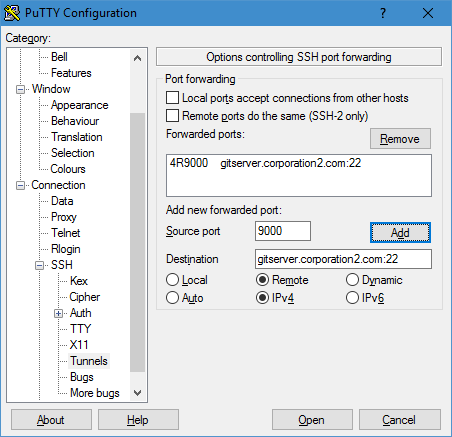

This is a short recipe on how to access a git repository through a shh tunnel.
In this scenario, we have ssh access to remoteserver.corporation1.com.
We want to access a on gitserver.corporation2.com from remoteserver.corporation1.com, the two machines cannot connect to eachother directly in any way.
Solution
Since we can connect to both remoteserver.corporation1.com and gitserver.corporation2.com from our desktop machine, we will establish a ssh tunnel from remoteserver.corporation1.com to gitserver.corporation2.com over our desktop machine.
Start a ssh tunnel session on desktop machine
Option 1 - ssh command
ssh -R 9000:gitserver.corporation2.com:22 remoteserver.corporation1.com
Here we are saying “Remote server remoteserver.corporation1.com should listen on localhost:9000 and forward all traffic to gitserver.corporation2.com:22”.
Option 2 - Putty
This is how we would do the same via Putty

On remote server A
- Edit ~/.ssh/config
Host sshtunnel.gitserver.corporation2.com HostName localhost Port 9000 User git IdentityFile ~/.ssh/git@gitserver.corporation2.com.pem IdentitiesOnly yes - Restart ssh daemon with
sudo service ssh restart - (optional) If you do not have a git repo yet, init one first with
git init <directory> - Add a new git remote to git repository
git remote add sshtunnelled git@sshtunnel:path/to/your/repositorynotice how we used the Host specified in the ssh config above - .git/config should have a remote similar to this now:
[remote "sshtunnelled"] url = git@sshtunnel.pingec.rds.aioss.com:path/to/your/repository fetch = +refs/heads/*:refs/remotes/sshtunnelled/* - Now you can try using the remote repo, a simple command would be
git remote show sshtunnelled - If that succeeds you can finally go ahead and do whatever you wanted to do with the now-available repo eg.
git pull sshtunnelled master